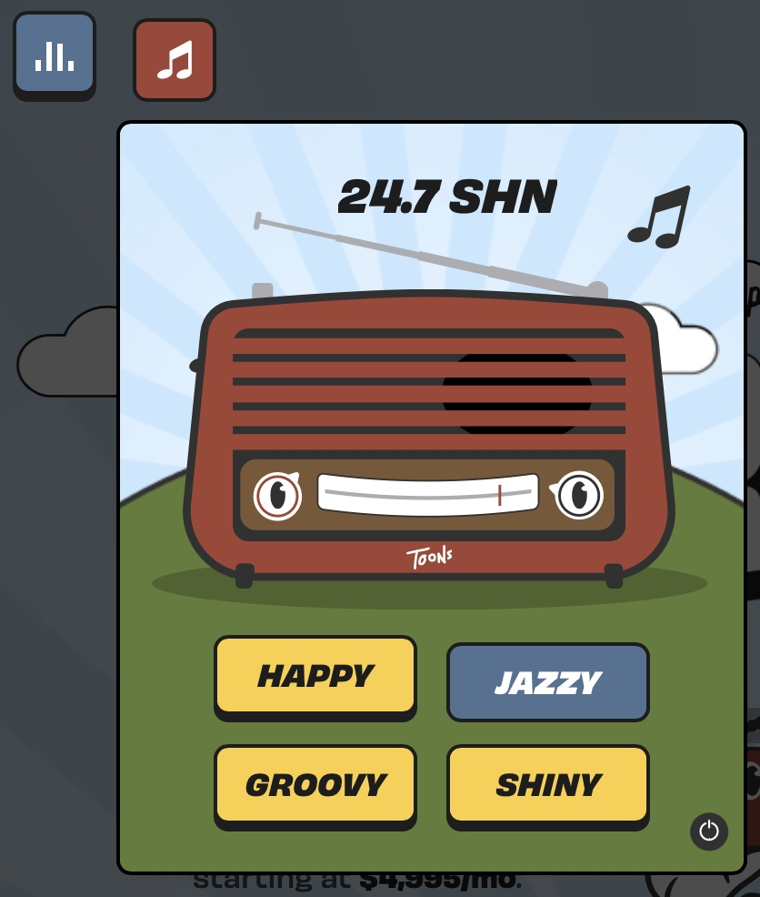
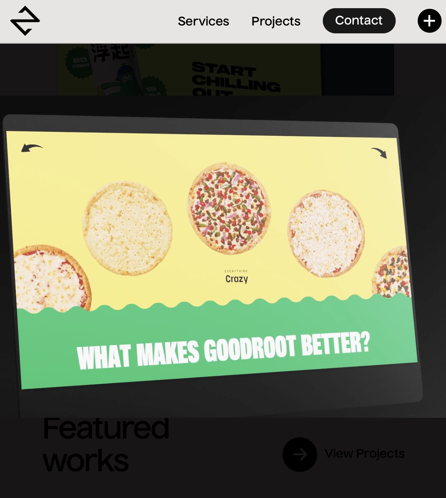

This web site's home page is an animation overlooking a sunset which you can raise and lower by altering the width of your screen. Sound plays a crucial element in this as soothing instrumental music plays in the background, creating a relaxing ambiance. With reference to Michael Choin's categorization of the uses of audio, the audio in this is reduced listening (1990). This means that the audio is a composition of music, not holding any narrative purpose. However, its purposes of emotive enhancement are successful. The overall combination of multimedia's on this website work synonymously to create a zen page, where the intention to create a de-stressing atmosphere is successfully achieved. Further emphasised by its simplicity and use of warm images. Additionally the user has the option in the top corner to silence the music if they wish, benefiting and avoiding causing distractions to those around the web site user.
This website is a promotional website, encouraging people to use SuperShine, a company specialising in website development and design.
The home page of this website is initially silent, and gives you the option to begin navigation without sound. This option is significantly important as the other webpage did not give you the option, rather, you had to silence the music after it initially start playing. Website 2, however, gives the option of a completely audio-less use. Adapting and altering to different users preferences.
If you then choose to begin with audio the user experiences semantic listening, listening that carries a narrative, and leads the user. The face on the screen reads out the message presented below it, clearly introducing users to the intentions of the web page, and furthermore complying with accessibility issues that may arise to users with visual impediments.
No further semantic audio is used, solely reduced audio as a form of background music. The user is even given a radio option where they can choose which genre of music they would enjoy to listen to whilst using the web page, and also the choice to turn it off. Not only is this again complying to the needs and preferences of a wide variety of its users in offering a choice. It also emphasises the companies technological advancements and abilities, something someone using this page would probably be considering whilst using this specific page. Overall, the use of audio in this web site is not overly necessary, other than the opening dialogue, the audio is not aiding in the users knowledge. I think it is more an aspect of enhancing user enjoyment and the company's appeal.
This is a web site, again for a design development company. The page displays a portfolio of previous projects and achievements as well as what offers they hole and how to contact if interested in using their services. Compared to the other websites the use of audio is very limited. There is no reduced audio playing throughout the use if the website, and no subliminal or direct narrative used at all. Subliminal narrative being things such as sound effects or soundscapes that help aid in an audio-story telling journey.
In its sleek, mature use of other multimedia's and design techniques, this web provides a more professional look than website 2, in which the atmosphere created was more enjoyable and child-like. Website 3 achieves its professionalism through its neutral colours, real-life photographic images, rather than animations. In not using sound throughout, it may add to the professionalism it is trying to uphold.
In terms of where it uses audio, its only use is during an advertisement for the company:
This ad was a transition of a laptop behind a black setting showing different websites they have created, with its use of audio consisting of reduced sound playing low-fi beats as background music. This music was beneficial to an extent in making the clip more enjoyable and creating more of an atmosphere. However, the music was repetitive, as was the video and it lost my attention rather quickly. I suggest a more successful use of audio might have incorporated a voice over. This use of direct narrative could have had multiple benefits. As the video just showcased the websites rather than highlighting their benefits, or the companies achievements, the use of a voice over could have added to this. It would also be beneficial to visually impaired users. However, in saying that users who may be deaf, or unable to listen to audio at that time would not get the full benefits. So too, the additional multimedia, text, could then be in place to summarise the main points, either on the video, or accompanying it on the page.
Furthermore, the website displays scroll-throughs of websites they have helped develop/ design. These do not contain audio, or even a choice to play audio. I think the use of reduced, background music would help captivate and intrigue users to watch the full run-through.
Included in my portfolio of audio content are different types of both semantic and reduced audio. One idea for my web page is to create character cards (similar to my week 2 IL activity audience personas). With these, I will have a person depicting a hypothetical case story of a time misinformation was spread on twitter and its impact on them. I imagine I will layer the reduced sound underneath the semantic, direct narrative, so too emphasise the intensity and seriousness of the audio clip.
This is reduced audio I intend to cut and then place as background music to my monologues, in order emphasise the creation of a tense atmosphere.
This is more an example of how I can incorporate casual sound through subliminal narrative. The audio is a group of children cheering and could be put in at the end of my web pages narrative, in order to communicate the sense of achievement they should feel through using and learning from my web page.
This is an initial recording of a direct narrative audio. It is a theoretical case study of how misinformation can effect groups of people. I intend to cut this and layer the first sound underneath.
These audios demonstrate how I could incorporate all types and uses of sound into my web page in order to optimize user engagement.
In the lab activity, I will simply present the edited audios and evaluate their positives and negatives.